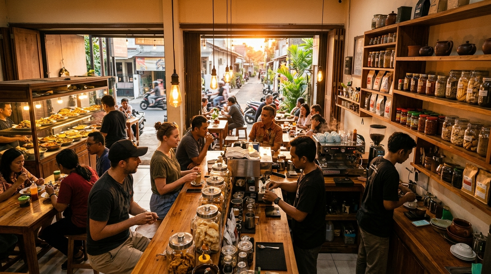
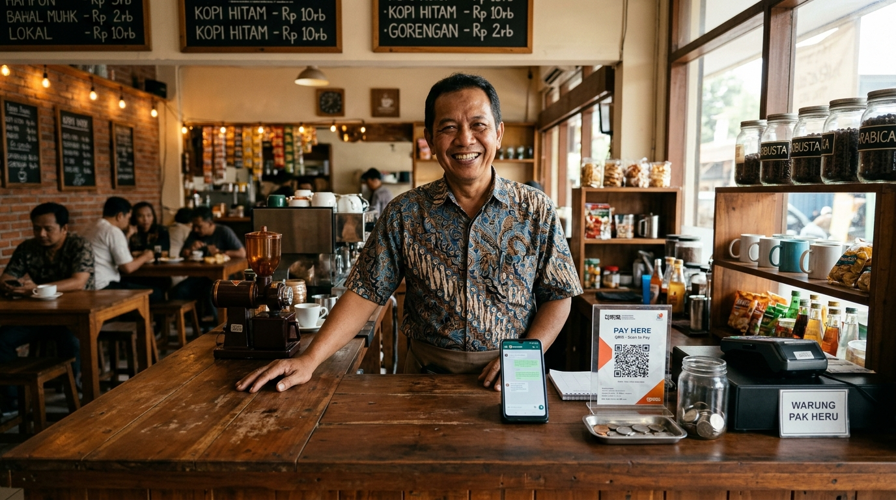
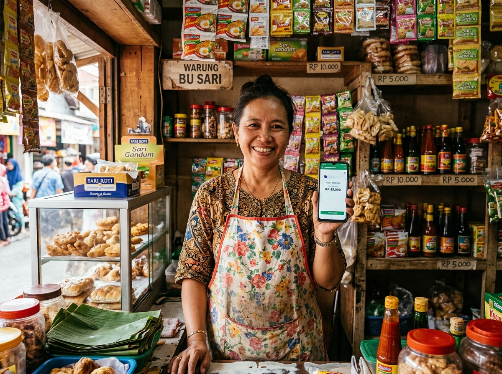

Punya Usaha? Yuk, Mulai Terima Pembayaran QRIS dengan DANA Bisnis!
Pelajari persiapan dan cara daftar DANA Bisnis lewat panduan praktis yang mudah dipahami, langsung dari HP kamu.


Masih Bingung Cara Mulai Pakai QRIS?
Banyak pemilik usaha ingin menyediakan pembayaran non-tunai, tetapi belum tahu harus mulai dari mana.
Belum tahu cara daftar
Masih bingung langkah awal untuk mendapatkan QRIS bagi usaha dan formulir apa saja yang perlu diisi.
Takut prosesnya rumit
Belum memahami tahapan, syarat berkas, dan informasi yang perlu disiapkan sehingga ragu untuk mulai.
Belum memahami persiapan yang diperlukan
Bingung dokumen apa saja yang harus disiapkan sebelum membuka aplikasi pendaftaran di ponsel.
Kenapa Usaha Kamu Perlu Mengenal QRIS?
Standar resmi dari Bank Indonesia agar pelanggan dari berbagai bank atau e-wallet apa saja dapat membayar cukup dengan satu kode QR.
Memberikan Pilihan Pembayaran Non-Tunai
Pelanggan dapat membayar secara praktis menggunakan aplikasi dompet digital atau mobile banking apa saja tanpa perlu membawa uang fisik.
Membantu Mengurangi Ketergantungan Uang Tunai
Berikan alternatif pembayaran bagi pelanggan tanpa khawatir kehilangan pembeli hanya karena tidak ada uang kembalian atau uang pas di laci kasir.
Membantu Merchant Memantau Transaksi Digital
Riwayat pembayaran tercatat rapi secara otomatis di aplikasi, memudahkan pencatatan buku kas harian usaha kamu tanpa khawatir selisih hitung.
Dapat Digunakan oleh Beragam Jenis Usaha
Dapat digunakan oleh warung kelontong, kedai kopi, kios pulsa, jasa pangkas rambut, kuliner kaki lima, maupun pedagang keliling yang memenuhi ketentuan.
Kenalan dengan DANA Bisnis
DANA Bisnis merupakan layanan untuk membantu pelaku usaha menerima pembayaran digital sesuai fitur dan ketentuan yang berlaku. Lewat panduan ini, kamu bisa mempelajari persiapan dan langkah pendaftarannya dengan bahasa yang lugas.

Siapkan Ini Sebelum Daftar
Supaya prosesnya lebih terarah dan tidak bolak-balik mengisi data, pastikan kamu sudah menyiapkan hal-hal berikut di ponsel kamu. Centang untuk memeriksa kesiapanmu!
1. Smartphone & Koneksi Internet
Ponsel dengan koneksi internet yang stabil untuk mengakses aplikasi DANA tanpa gangguan.
2. Akun DANA Aktif
Nomor ponsel terdaftar aktif dan bisa menerima kode SMS OTP verifikasi pendaftaran.
3. Akun DANA Premium
Akun yang telah terverifikasi KTP (apabila dipersyaratkan oleh sistem penyedia layanan).
4. Informasi Usaha yang Benar
Nama gerai/warung, kategori bidang bisnis, serta alamat lengkap lokasi usaha kamu.
5. Foto Usaha atau Produk
Foto fisik tempat jualan, gerobak/etalase, atau contoh produk dagangan jika diminta.
6. Kode Referral Resmi
Siapkan kode referral NAV9S4 saat proses pendaftaran.
Cara Daftar DANA Bisnis, Langkah demi Langkah
Yuk, ikuti panduan terstruktur ini untuk mengetahui alur pendaftaran DANA Bisnis langsung dari aplikasi smartphone kamu.
Buka aplikasi DANA
Tahap AwalMasuk ke akun DANA kamu yang sudah terpasang di smartphone. Pastikan aplikasi sudah diperbarui ke versi terbaru melalui Google Play Store atau App Store.
Cari menu DANA Bisnis yang tersedia
Navigasi FiturPada layar utama, buka menu Lihat Semua (View All) atau telusuri bilah layanan finansial untuk menemukan ikon dan menu DANA Bisnis.
Mulai proses pendaftaran
Registrasi ProfilTekan tombol Daftar Sekarang untuk memulai pembuatan profil usaha dan memasukkan kode undangan/referral jika kolom tersebut tersedia.
Lengkapi informasi usaha
Data UsahaIsi nama toko/warung, kategori dagangan, lokasi usaha, jam operasional, serta rekening penampung saldo penjualan secara teliti dan sesuai fakta.
Ikuti instruksi verifikasi jika diminta
Verifikasi BerkasUnggah foto gerobak, etalase warung, atau contoh produk jika diminta. Pastikan foto memiliki pencahayaan jelas sebelum menekan tombol kirim.
Kirim pengajuan dan pantau statusnya
Pengajuan SelesaiTunggu proses peninjauan oleh tim terkait. Notifikasi QRIS aktif akan segera muncul di dashboard akun usahamu jika pengajuan berhasil disetujui.
Jangan Lupa Kode Referral!
Saat mendaftar DANA Bisnis, perhatikan tahapan referral dan masukkan kode berikut jika tersedia pada formulir proses pendaftaran.
Pastikan kode referral dimasukkan pada tahapan yang sesuai agar referral dapat tercatat berdasarkan ketentuan program. QRIS Praktis tidak mengklaim kode otomatis diterapkan.
Siap Mengenal DANA Bisnis untuk Usahamu?
Setelah memahami panduannya, lanjutkan proses pendaftaran melalui aplikasi atau kanal resmi DANA.
Pertanyaan yang Sering Diajukan (FAQ)
Jawaban praktis seputar QRIS dan panduan pendaftaran DANA Bisnis untuk para juragan UMKM.